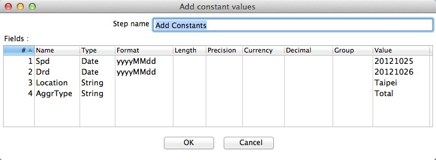

Configure Add Constant
- Double-click on the Add Constant Step.
- The configuration window belonging to this kind of Step will appear.
- Add new Field required by the Target Schema that are common to your entire dataset.
In our case here, we filled in the Source Publication Date, Data Record Date,
Location, and Aggregation Type.

- Click OK to finish defining the Step Add Constant.